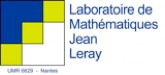

Philippe Carmona
Enseignements/Teaching
Prepublications
Publications
[archives]
[tags]
Blogroll
Master de Mathématiques
Département de Mathématiques
Social
github

Responsable du/ Head of "Master de Mathématiques"
Spécialité : Théorie des Probabilités
Un
Curriculum Vitae
Research interests/ Recherche
Stochastic models of population
Interacting self avoiding random walks
Directed polymers in random environment
orcid.org/0000-0003-3544-5416

 orcid.org/0000-0003-3544-5416
orcid.org/0000-0003-3544-5416